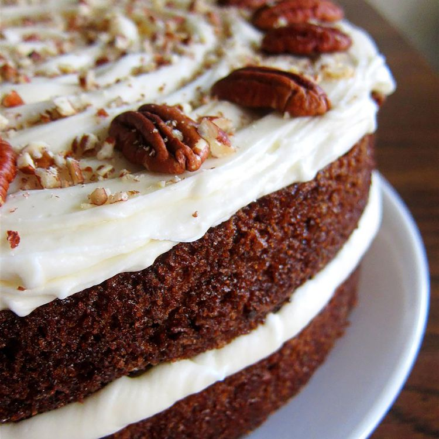

Home
Carrot Cake
Credit: allrecipes.com

Description
Everybody loves carrot cake for dessert. Here's how to make it.
Ingredients
Cake
- 2 cups white sugar
- 1 1/4 cups vegetable oil
- 4 large eggs
- 2 tsp vanilla extract
- 2 cups all purpose flour
- 2 tsp baking soda
- 2 tsp baking powder
- 2 tsp ground cinnamon
- 1/2 tsp salt
- 3 cups grated carrots
- 1 cup chopped pecans
Frosting
- 1/2 cup butter
- 8 oz cream cheese
- 4 cups confectioners' sugar
- 1 tsp vanilla extract
- 1 cup chopped pecans
Steps
- Preheat the oven to 350 degrees F (175 degrees C). Grease and flour a 9x13-inch pan.
- Beat sugar, oil, eggs, and 2 teaspoons vanilla together in a large bowl with an electric mixer until well combined.
- Mix in flour, baking soda, baking powder, cinnamon, and salt. Stir in carrots. Fold in pecans.
- Pour into the prepared pan.
- Bake in the preheated oven until a toothpick inserted into the center of the cake comes out clean, about 40 minutes. Let cool in the pan for 10 minutes, then turn out onto a wire rack and cool completely.
- To make the frosting: Beat butter, cream cheese, confectioners' sugar, and 1 teaspoon vanilla together in a large bowl with an electric mixer until smooth and creamy.
- Stir in chopped pecans.
- Frost the cooled cake. Serve and enjoy!